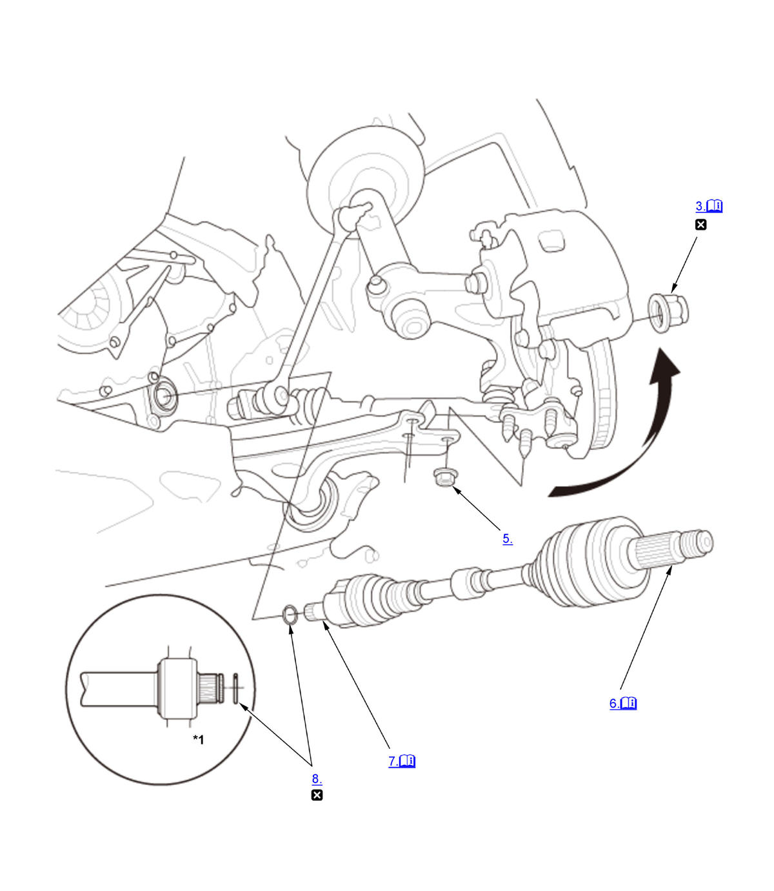

Front Driveshaft Removal and Installation (Except K20C1 (M/T)): Removal: Procedure
Numbered call-outs in figure pertain to list numbers in following procedure.

Courtesy of HONDA, U.S.A., INC. |
Detailed information, notes, and precautions |
 |
Replace |
| *1 | Intermediate shaft (With intermediate shaft) |
- Vehicle - Lift
- Front Wheel - Remove
- Spindle Nut - Remove
1. Pry up the stake (A) on the spindle nut (B). 2. Remove the spindle nut.
- Transmission Fluid - Drain
- Lower Arm Ball Joint - Disconnect
- Outboard Joint - Disconnect
- Inboard Joint - Disconnect (Both Sides)
Left driveshaft and Right driveshaft (Without intermediate shaft)
1. Pry the inboard joint (A) using a pry bar.
NOTE: Be careful not to damage the oil seal or the end of the inboard joint with the pry bar.
2. Remove the driveshaft as an assembly.
NOTE: Do not pull on the driveshaft (B), or the inboard joint may come apart. Pull the inboard joint straight out to avoid damaging the oil seal.
Right driveshaft (With intermediate shaft)
1. Drive the inboard joint (A) off of the intermediate shaft using a drift punch and a hammer.
2. Remove the driveshaft as an assembly.
NOTE: Do not pull on the driveshaft (B), or the inboard joint may come apart. Pull the inboard joint straight out.
- Inboard Joint Set Ring - Remove